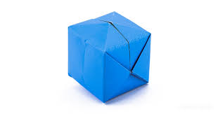

Origami Waterbomb(intermediate)

step 1. Fold your paper in half with the coloured side on the inside. Open out and fold in half again.
step 2. Open out and fold along both the diagonals this time with the coloured side on the outside.
step 3. Collapse the paper along the folds and fold it down to make a triangle. This is your water bomb base.
step 4. Fold both the bottom corners up to meet the center. Flip it over and do the same on the other side.
step 5. Now fold the 2 side corners in to meet in the center. Flip it over and do the same on the other side.
step 6. Take the top flap and fold it down using the previous fold as a guide. Take this triangle and fold it back on itself to make a smaller triangle.
step 7. Lift the small folded triangle and open up the pocket that is underneath. Slide the small triangle inside the pocket.
step 8. Do the same for the 3 remaining flaps.
step 9. On one end of your origami water bomb you should have a small hole in the bottom. Inflate the balloon by gently blowing into the hole.
step 10. Fill with water and throw!